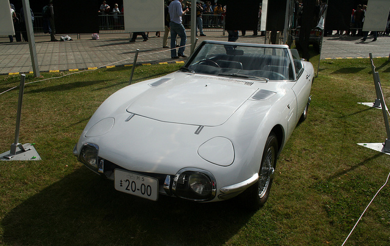

Toyota Supra
Ditulis ulang oleh Gemphar Adfizqi. 23 Oktober 2023
Toyota Supra merupakan salah satu sport car populer dan banyak diminati. Jika berbicara mengenai sejarah Toyota Supra ini, pastinya beberapa dari Carmudian teringat dengan Toyota 2000GT yang diluncurkan pada 1967 silam dan muncul di film James Bond berjudul “You Only Live Twice”.

(Toyota 2000 GT)
Hadir pertama kali di tahun 1970-an, kesuksesan Toyota Supra tak lepas dari peran Toyota Celica, di mana Supra mengandalkan basis dari Celica Liftback.
Toyota Supra memang mempunyai sejarah yang panjang dan penggemarnya terbilang tidak sedikit hingga kini. Desain mobil ini sangat sporty dan stylish, serta dibenamkan mesin dengan performa yang ganas. Selain itu, Toyota Supra ini juga dinilai mudah dimodifikasi, sehingga ada banyak pecinta modifikasi yang menginginkan mobil tersebut.
Toyota Supra Generasi Pertama
(Toyota MK1)
Seperti diketahui sebelumnya, generasi pertama Toyota Supra muncul pada 1970-an, lebih tepatnya di tahun 1978. Mobil dengan kode sasis A40 ini jadi basis utama Toyota Supra yang diproduksi saat ini, di mana merupakan pengembangan dari Celica Liftback.
Sebagai informasi, Toyota Supra generasi pertama masih jadi bagian dari Celica, yakni Celica Supra. Celica Supra diposisikan sebagai sebuah sport car yang digunakan untuk sehari-hari. Mobil ini pun dijuluki ‘Pony Car’.
Ciri khas dari Toyota Supra yang diwariskan secara turun-temurun yaitu mempunyai kap mesin panjang di mana membuat ruang kabin mobil tersebut jadi terbatas.
Oleh karena itu, Toyota Supra tidak dapat memuat orang banyak. Mobil sport ini hanya dapat menampung dua orang, termasuk pengemudi. Meski demikian, Supra tetap diincar banyak orang, khususnya pecinta mobil sport. Kap mesin Supra generasi pertama mengakomodasi mesin 6 silinder beserta transmisi yang meneruskan tenaga mesinnya ke roda belakang.
Soal dapur pacu, Toyota Supra generasi pertama ditawarkan dalam tiga jenis mesin. Pertama, mesin M-EU dengan kapasitas 1.998 cc. Kedua, mesin 4M-E berkapasitas 2.563 cc dan terakhir, mesin 5M-E yang memiliki kapasitas 2.759 cc.
Toyota supra Generasi kedua

(Toyota MK2)
Toyota Supra generasi kedua pun hadir di negara asalnya, Jepang, tiga tahun setelahnya, yakni di tahun 1981. Setahun setelahnya, mobil tersebut diekspor secara global.
Tampilan Supra generasi kedua ini terkesan begitu aerodinamis dengan disematkan lampu pop up yang menjadi tren di masanya.
Secara keseluruhan, mobil tersebut terlihat maskulin serta tangguh. Toyota Supra generasi kedua dinilai sukses, di mana mobil ini telah diakui pasar-pasar global seperti Inggris dan Eropa.
Mobil ini pernah mendapat gelar di ajang British Saloon Car Championship dan US (United States) Grand Prix di tahun 1979.
Supra generasi kedua sudah dilengkapi mesin dengan tenaga induksi mumpuni yang pertama kali diperkenalkan di generasi tersebut dengan kode M-TEU berkapasitas 1.998 cc Turbocharger serta M-TE 1.998 cc Turbocharger.
Selain itu, tersedia juga mesin dengan kode lainnya, yakni 1G-EU dan 1G-GEU berkapasitas 1.998 cc, serta 5M-E dan 5M-GE dengan kapasitas 2.759 cc.
Empat kode mesin Supra ini hadir dengan Normally Aspirated (N/A) 6 silinder segaris. Di tahun 1985, Toyota Supra memisahkan diri dari Celica, kemudian dirilis generasi selanjutnya di tahun selanjutnya.
Toyota Supra Generasi Ketiga
(Toyota Mk3)
Dihadirkan pada 1986, Toyota Supra generasi ketiga langsung mencuri perhatian para pecinta mobil sport.
Desain mobil yang cenderung mengotak serta besar di generasi sebelumnya sudah digantikan dengan yang lebih aerodinamis serta slim pada Supra generasi ketiga.
Namun, lampu depan pop up masih disematkan pada Supra generasi tersebut. Perlu diketahui, lampu model pop up adalah hal wajib pada setiap mobil sport di masa itu.
Selain itu, Supra generasi ketiga masih mempertahankan sistem penggerak roda belakang. Mobil ini pun diklaim sangat diterima di pasar Amerika maupun Eropa.
Mengenai dapur pacu, Supra generasi ketiga ditawarkan dalam tiga pilihan mesin, yaitu 2.000 cc, 2.000 cc turbo, dan 3.000 cc turbo, sehingga calon konsumen yang ingin membeli mobil ini punya banyak pilihan. Dari ini, nama Supra Turbo pun tercpita.
Untuk mesin berkapasitas 3.000 cc turbo, dapat menghasilkan tenaga hingga 230 hp.
Model ini turut disematkan berbagai fitur dan teknologi canggih, mulai dari pendingin oli mesin, spoiler belakang yang terintegrasi Limited Slip Differential (LSD), Anti Lock Braking System (ABS), dan lain-lain.
Toyota Supra Generasi Keempat
(Toyota MK4)
Toyota Supra generasi keempat pun dihadirkan pada 1993 silam. Mobil tersebut mengusung filosofi ‘Less is More’ dan menggunakan kode Mk4 khusus pasar AS (Amerika Serikat).
Supra generasi keempat ini diklaim dapat memberi aerodinamis lebih baik, di mana bobotnya sendiri dipangkas hingga sekitar 100 kg.
Mobil tersebut dibenamkan mesin berkapasitas 3.000 cc turbo JZ Series yang bisa menghasilkan tenaga sebesar 320 hp pada 5.600 rpm serta torsi puncak 427 Nm pada 4.200 rpm.
Mesin tersebut dikawinkan dengan dua pilihan transmisi, yaitu manual 6 percepatan dan otomatis 4 percepatan.
Penggunaan bahan alumunimum dalam jumlah banyak serta disematkan beragam fitur yang dinilai modern di masanya, membuat Supra generasi keempat begitu banyak diminati oleh konsumen.
Bahkan, mobil ini sering tampil di berbagai film Hollywood berkat tampilannya yang terlihat sangat menarik. Sebut saja salah satu filmnya yakni Fast and Furious yang masuk box office di berbagai negara, termasuk Indonesia.
Namun sayangnya di tahun 2002 lalu, Toyota Supra sempat pamit mundur dari pasar sport car. Meski demikian, Supra generasi keempat termasuk sport car paling dikenang serta paling populer berkat keunggulan-keunggulan yang dimilikinya.
Toyota Supra Generasi kelima
(Toyota MK5)
Penantian pecinta sport car, khususnya Toyota Supra, akhirnya berakhir di tahun 2014, di mana Toyota memberi tanda kembalinya mobil tersebut meski hanya dalam bentuk mobil konsep FT-1.
Mobil ini merupakan proyek kerja sama dengan BMW yang mengusung desain sangat modern serta disematkan berbagai teknologi canggih, namun masih mempunyai DNA Supra melegenda.
Butuh waktu hingga 17 tahun untuk Toyota kembali menghadirkan Supra ke publik dengan merilis generasi kelima mobil ini di ajang Detroit Auto Show 2019.
Mengenai mesin yang digunakan, Supra generasi kelima ini ditawarkan dalam dua pilihan mesin, yaitu mesin berkapasitas 3.000 cc, 6 silinder segaris, Twin Scroll Turbocharger sebagai mesin utama. Pilihan mesin lainnya yaitu mesin turbo berkapasitas 2.000 cc.